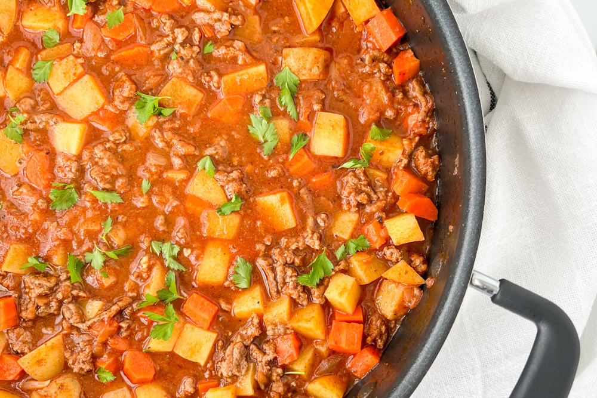

The potatoes with canned meat stew

Overview
It's a fast, simle to cook and delicious one-pot dish
that requires only 20 minutes of actions!
You will definitely love it!
Ingredients
- Vegetable oil
- Onion ~~ 1.5 pc
- Carrot ~~ 1.5 pc
- Bell pepper ~~ 2 pc
- Garlic ~~ 3-4 cloves
- ...any vegetables you want to add
- Potatoes ~~ 6-7 medium pc
- Tomato paste - 2 tbl. spoons
- Canned meat - 1 pc
- Salt, black paper, paprika, oregano, other spices for your taste
- Hot Sauce or Red Pepper Flakes (optional)
- Water ~~ 3-4 cups of boiling water
- Fresh parsley (optional)
Instructions
- Heat oil in a large pan over medium-high heat. Add the onion, carrots and bell pepper.
Mix and cook for 5 minutes.
- Add all remaining vegetables and cook for another 5-10 minutes until onion becomes transparent.
- Add tomato paste and heat it for 1 minute. Then, add your canned meat, paprika, oregano, salt, and pepper.
Stir and cook for 2 minutes.
- Add potatoes, red chili flakes (or hot sauce), boiling water and broth from canned meat. Mix everything evenly.
Bring the mixture to a boil, cover, and simmer on low (rolling boil) for 35 minutes. Remove the cover and
simmer for 5-10 minutes to thicken the sauce and cook off excess water.
- Garnish with fresh parsley and enjoy immediately.
Go back...